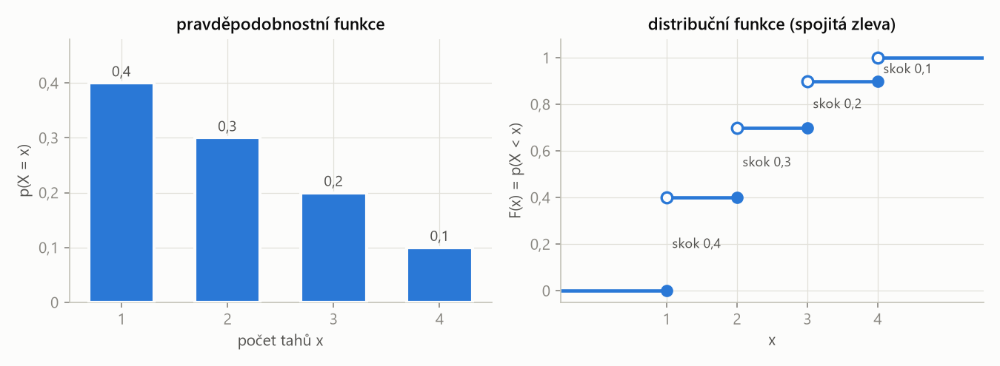
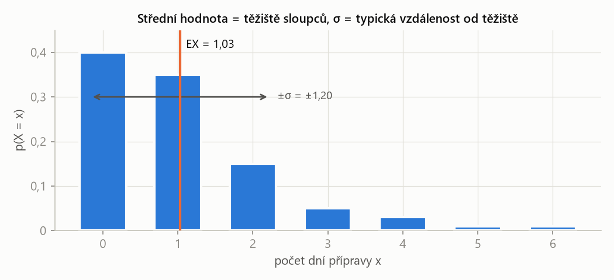

PSO – příprava na zkoušku · Diskrétní náhodná veličina – PSO · https://balnerm.github.io/pripravy/pso/03_diskretni_nv.html
Kapitola 3
Diskrétní náhodná veličina
Místo jevů začneme počítat s čísly: počet tahů, počet opravených písemek, počet dní přípravy. Náhodná veličina přiřadí každému výsledku číslo a její „rozdělení“ říká, s jakou pravděpodobností nabude které hodnoty. Z rozdělení pak spočítáme střední hodnotu (kolik průměrně) a rozptyl (jak moc to kolísá). To je obsah sady 2.
Náhodná veličina a její rozdělení
Náhodná veličina \(X\) je funkce, která každému elementárnímu jevu přiřadí reálné číslo tak, že pro každé \(x\) má jev \(\{X < x\}\) definovanou pravděpodobnost.
„číslo, které je výsledkem pokusu“. Místo „padla dvě orla a panna“ říkáme „X = 2 orli“. S čísly umíme počítat průměry a rozptyly.
Náhodná veličina je diskrétní, jestliže nabývá jen konečně nebo spočetně mnoha hodnot \(x_1, x_2, \dots\) (její distribuční funkce je schodovitá).
hodnoty se dají očíslovat a vypsat: 0, 1, 2, … Typicky počty (kolik, kolikrát, na kolikátý pokus). Opakem je spojitá veličina (kapitola 5) – délka, čas, napětí.
Pravděpodobnostní funkce diskrétní veličiny \(X\) je \(p(x_i) = p(X = x_i)\) pro všechny hodnoty \(x_i\), kterých \(X\) nabývá. Platí \(p(x_i) \ge 0\) a \(\sum_i p(x_i) = 1\).
tabulka „hodnota → pravděpodobnost“. V anglických skriptech předmětu se jí říká frequency function \(f(x_i)\), jinde probability mass function. „Urči rozdělení“ (determine its distribution) znamená právě tuto tabulku nebo vzorec.
Distribuční funkce náhodné veličiny \(X\) je funkce
\[ F(x) = p(X < x), \qquad x \in \mathbb{R}. \]„pravděpodobnost, že X vyjde menší než x“ – nasčítané pravděpodobnosti všech hodnot vlevo od x. U diskrétní veličiny je to schodovitá funkce, která v každé hodnotě \(x_i\) vyskočí o \(p(x_i)\).
Skripta předmětu (a výsledky sad) používají ostrou nerovnost. Distribuční funkce je proto spojitá zleva a hodnota v bodě skoku je ta „dolní“: intervaly se píšou jako \((x_i, x_{i+1}\rangle\). Anglické učebnice často používají \(F(x) = P(X \le x)\) se skoky „nahoru“ už v bodě – pro spojité veličiny je to jedno, pro diskrétní ne.
- \(0 \le F(x) \le 1\), \(F\) je neklesající, \(F(-\infty) = 0\), \(F(\infty) = 1\).
- Pravděpodobnost intervalu:
- Velikost skoku v bodě je pravděpodobnost té hodnoty:
- Opačné nerovnosti přes doplněk: \(p(X \ge a) = 1 - F(a)\).
| \(F(x_i^{+})\) | hodnota těsně vpravo od bodu \(x_i\) (po skoku) |
| \(F(x_i)\) | hodnota v bodě = před skokem (protože \(X < x_i\) hodnotu \(x_i\) nezahrnuje) |
Poznáš to: determine its distribution, probability function, distribution function; X je „počet něčeho“.
- Vypiš všechny hodnoty, kterých může X nabýt (nejmenší až největší).
- Pro každou hodnotu spočítej \(p(X = x_i)\) – většinou násobením pravděpodobností po sobě jdoucích kroků (věta o násobení).
- Kontrola: součet = 1.
- Distribuční funkce: postupně sčítej. Na \((-\infty, x_1\rangle\) je 0, na \((x_1, x_2\rangle\) je \(p(x_1)\), na \((x_2, x_3\rangle\) je \(p(x_1) + p(x_2)\), …, za poslední hodnotou 1.
V sáčku jsou 3 bílé a 2 červené kuličky. Taháme bez vracení, dokud nevytáhneme červenou. X = počet tahů. Urči rozdělení a distribuční funkci X.
Řešení krok po kroku
1. Hodnoty: nejdřív v 1. tahu, nejpozději ve 4. (tři bílé mohou přijít před červenou): \(X \in \{1, 2, 3, 4\}\).
2. Pravděpodobnosti (bílé, …, bílé, pak červená; v každém tahu ubude jedna kulička):
\[ \begin{aligned} p(1) &= \tfrac{2}{5} = 0{,}4 \\ p(2) &= \tfrac{3}{5} \cdot \tfrac{2}{4} = 0{,}3 \\ p(3) &= \tfrac{3}{5} \cdot \tfrac{2}{4} \cdot \tfrac{2}{3} = 0{,}2 \\ p(4) &= \tfrac{3}{5} \cdot \tfrac{2}{4} \cdot \tfrac{1}{3} \cdot \tfrac{2}{2} = 0{,}1 \end{aligned} \]3. Kontrola: \(0{,}4 + 0{,}3 + 0{,}2 + 0{,}1 = 1\).
4. Distribuční funkce \(F(x) = p(X < x)\):
\[ F(x) = \begin{cases} 0, & x \in (-\infty, 1\rangle \\ 0{,}4, & x \in (1, 2\rangle \\ 0{,}7, & x \in (2, 3\rangle \\ 0{,}9, & x \in (3, 4\rangle \\ 1, & x \in (4, \infty) \end{cases} \]
Výška každého schodu = výška sloupce vlevo. V samotném bodě skoku je F ještě na nižší úrovni (plné kolečko dole), protože \(X < x\) danou hodnotu nezahrnuje.
X = počet opravených písemek za hodinu. Distribuční funkce je 0 na \((-\infty, 8\rangle\), 0,1 na \((8, 9\rangle\), 0,3 na \((9, 10\rangle\), 0,6 na \((10, 11\rangle\), 0,9 na \((11, 12\rangle\) a 1 na \((12, \infty)\). Urči pravděpodobnost, že za hodinu bude opraveno (a) právě 10, (b) méně než 10, (c) aspoň 10 písemek.
Řešení krok po kroku
1. Z distribuční funkce zpět na pravděpodobnostní: skok v bodě = pravděpodobnost hodnoty.
\[ \begin{aligned} p(8) &= 0{,}1 - 0 = 0{,}1 \\ p(9) &= 0{,}3 - 0{,}1 = 0{,}2 \\ p(10) &= 0{,}6 - 0{,}3 = 0{,}3 \\ p(11) &= 0{,}9 - 0{,}6 = 0{,}3 \\ p(12) &= 1 - 0{,}9 = 0{,}1 \end{aligned} \]2. (a) Právě 10: \(p(X = 10) = 0{,}3\).
3. (b) Méně než 10 – to je přímo definice F:
\[ p(X < 10) = F(10) = 0{,}3 \]4. (c) Aspoň 10 – doplněk k (b):
\[ p(X \ge 10) = 1 - F(10) = 0{,}7 \]Střední hodnota a rozptyl
Střední hodnota diskrétní náhodné veličiny je
\[ EX = \sum_i x_i\, p(x_i), \]pokud řada absolutně konverguje.
vážený průměr hodnot, kde vahami jsou pravděpodobnosti. Kdybychom pokus opakovali mnohokrát, průměr výsledků by se blížil EX. Je to „těžiště“ sloupců grafu.
Rozptyl je střední hodnota čtverce odchylky od střední hodnoty, \(DX = E(X - EX)^2\); směrodatná odchylka je \(\sigma = \sqrt{DX}\).
jak daleko od průměru hodnoty typicky padají. Rozptyl je v „jednotkách na druhou“, proto se pro představu bere jeho odmocnina σ ve stejných jednotkách jako X. Skripta značí rozptyl \(DX\) nebo \(D(X)\), anglicky též \(\operatorname{Var} X\).
| \(EX^2\) | střední hodnota druhé mocniny – stejný součet jako EX, jen s \(x_i^2\) |
| \((EX)^2\) | druhá mocnina střední hodnoty |
Vlastnosti: \(E(aX + b) = a\,EX + b\), \(D(aX + b) = a^2\,DX\) (posunutí rozptyl nemění, natažení ho násobí čtvercem).
Poznáš to: expected (mean) value, expected number of, variance, average.
- Do tabulky přidej řádky \(x_i\,p_i\) a \(x_i^2\,p_i\).
- \(EX\) = součet řádku \(x_i\,p_i\); \(EX^2\) = součet řádku \(x_i^2\,p_i\).
- \(DX = EX^2 - (EX)^2\); kontrola: rozptyl nesmí vyjít záporný.
X = počet dní, které student věnuje přípravě na zkoušku:
| \(x_i\) | 0 | 1 | 2 | 3 | 4 | 5 | 6 |
|---|---|---|---|---|---|---|---|
| \(p(x_i)\) | 0,4 | 0,35 | 0,15 | 0,05 | 0,03 | 0,01 | 0,01 |
(a) Urči střední počet dní přípravy. (b) Urči rozptyl.
Řešení krok po kroku
1. Střední hodnota:
Součiny \(x_i\,p_i\) jsou 0; 0,35; 0,3; 0,15; 0,12; 0,05; 0,06. Sečteme je:
\[ \begin{aligned} EX &= 0{,}35 + 0{,}3 + 0{,}15 \\ &\quad + 0{,}12 + 0{,}05 + 0{,}06 \\ &= 1{,}03 \end{aligned} \]2. Střední hodnota čtverců:
Součiny \(x_i^2\,p_i\) jsou 0; 0,35; 0,6; 0,45; 0,48; 0,25; 0,36:
\[ \begin{aligned} EX^2 &= 0{,}35 + 0{,}6 + 0{,}45 \\ &\quad + 0{,}48 + 0{,}25 + 0{,}36 \\ &= 2{,}49 \end{aligned} \]3. Rozptyl:
\[ DX = 2{,}49 - 1{,}03^2 = 2{,}49 - 1{,}0609 = 1{,}4291 \]Směrodatná odchylka \(\sigma = \sqrt{1{,}4291} \approx 1{,}20\) dne.

EX nemusí být hodnota, které X skutečně nabývá (1,03 dne) – je to těžiště. Nejpravděpodobnější hodnota (0) je jiná věc. Dlouhý „ocas“ doprava táhne těžiště od nuly.
X = počet dní bezporuchového chodu přístroje. Ze zadané tabulky neznáme \(p(0)\) a \(p(3)\):
| \(x_i\) | 0 | 1 | 2 | 3 | 4 | 5 | 6 |
|---|---|---|---|---|---|---|---|
| \(p(x_i)\) | ? | 0,35 | 0,15 | ? | 0,03 | 0,01 | 0,01 |
Urči je, víš-li, že střední počet dní bez poruchy je 1,5.
Řešení krok po kroku
1. Normování (součet je 1); známé hodnoty dávají 0,55:
\[ p(0) + p(3) = 1 - 0{,}55 = 0{,}45 \]2. Střední hodnota (člen s \(x = 0\) je nulový):
\[ 0{,}35 + 0{,}3 + 3\,p(3) + 0{,}12 + 0{,}05 + 0{,}06 = 1{,}5 \] \[ 0{,}88 + 3\,p(3) = 1{,}5 \;\Rightarrow\; p(3) = \frac{0{,}62}{3} \approx 0{,}2067 \]3. Dopočet z normování:
\[ p(0) = 0{,}45 - 0{,}2067 \approx 0{,}2433 \]\(EX^2\) znamená \(E(X^2)\) – nejdřív umocnit hodnoty, pak průměrovat. \((EX)^2\) je umocněný průměr. Jejich rozdíl je právě rozptyl, a ten je vždy \(\ge 0\). Vyjde-li záporný, je chyba v jednom z nich.
„Diskrétní náhodná veličina nabývá konečně nebo spočetně mnoha hodnot; popisuje ji pravděpodobnostní funkce \(p(x_i) = p(X = x_i)\), jejíž hodnoty dávají součet 1. Distribuční funkce \(F(x) = p(X < x)\) je u ní schodovitá, neklesající, zleva spojitá a skáče v každé hodnotě o její pravděpodobnost. Střední hodnota je vážený průměr \(\sum x_i p_i\), rozptyl je střední kvadratická odchylka od ní, prakticky \(EX^2 - (EX)^2\).“
Tabulka hodnot a pravděpodobností (součet 1) → nasčítáním distribuční funkce, váženým průměrem EX, průměrem čtverců mínus čtverec průměru DX.
| česky | anglicky |
|---|---|
| náhodná veličina | random variable |
| diskrétní / spojitá | discrete / continuous |
| rozdělení (pravděpodobnosti) | (probability) distribution |
| pravděpodobnostní funkce | probability function, frequency function, pmf |
| distribuční funkce | distribution function, cumulative distribution function (CDF) |
| střední hodnota | expected value, mean (value), expectation |
| rozptyl | variance (dispersion) |
| směrodatná odchylka | standard deviation |
| schodovitá funkce | step function |
| spojitá zleva | left-continuous |
| bezporuchový chod | trouble-free operation, uptime |
Fráze ze zadání: determine its distribution = urči rozdělení (tabulku / vzorec \(p(x_i)\)); just 10 = právě 10; less than / at least / at most / more than = méně než / aspoň / nejvýše / více než.
Shrnutí
Náhodná veličina převádí výsledek pokusu na číslo. Diskrétní veličinu popisuje pravděpodobnostní funkce (tabulka hodnot a jejich pravděpodobností se součtem 1) nebo ekvivalentně distribuční funkce \(F(x) = p(X < x)\), která je schodovitá a v každé hodnotě skočí o její pravděpodobnost. Z distribuční funkce se pravděpodobnost hodnoty čte jako výška skoku a pravděpodobnost „menší než a“ přímo jako \(F(a)\). Střední hodnota je vážený průměr hodnot, rozptyl je průměr čtverců odchylek, počítaný jako \(EX^2 - (EX)^2\).
Take-home messages
- „Urči rozdělení“ = vypiš všechny hodnoty a jejich pravděpodobnosti; zkontroluj součet 1.
- V tomto předmětu \(F(x) = p(X < x)\): intervaly \((x_i, x_{i+1}\rangle\), \(p(X < a) = F(a)\), \(p(X \ge a) = 1 - F(a)\).
- Skok distribuční funkce = pravděpodobnost hodnoty.
- Střední hodnota \(EX = \sum x_i p_i\), směrodatná odchylka \(\sigma = \sqrt{DX}\).
- Rozptyl \(DX = \sum x_i^2 p_i - (EX)^2\).
- Neznámé pravděpodobnosti dopočti ze dvou rovnic: součet = 1 a zadané EX.
Otázky ke zkoušce
Co je náhodná veličina a kdy je diskrétní?
Funkce, která každému výsledku pokusu přiřadí reálné číslo. Diskrétní je, když nabývá jen konečně nebo spočetně mnoha hodnot – typicky počty. Její distribuční funkce je schodovitá.
Definujte distribuční funkci a vyjmenujte její vlastnosti.
\(F(x) = p(X < x)\). Je neklesající, má hodnoty v \(\langle 0, 1\rangle\), \(F(-\infty) = 0\), \(F(\infty) = 1\), je spojitá zleva a platí \(p(a \le X < b) = F(b) - F(a)\). U diskrétní veličiny skáče v každé hodnotě o její pravděpodobnost.
Jak z distribuční funkce zjistíte pravděpodobnost konkrétní hodnoty?
Jako výšku skoku v tom bodě: hodnota těsně vpravo minus hodnota v bodě, \(p(X = x_i) = F(x_i^+) - F(x_i)\). Např. když F skočí z 0,3 na 0,6 v bodě 10, je \(p(X = 10) = 0{,}3\).
Co vyjadřuje střední hodnota a jak se počítá?
Průměrnou hodnotu, ke které by se blížil průměr výsledků při mnoha opakováních – těžiště rozdělení. \(EX = \sum x_i\,p(x_i)\).
Co vyjadřuje rozptyl a proč se počítá i směrodatná odchylka?
Rozptyl \(DX = E(X - EX)^2\) měří, jak moc hodnoty kolísají kolem střední hodnoty. Je ale v jednotkách na druhou, proto se pro interpretaci používá \(\sigma = \sqrt{DX}\) ve stejných jednotkách jako X. Počítá se \(DX = EX^2 - (EX)^2\).
Jak se změní EX a DX, když veličinu vynásobíme konstantou a přičteme konstantu?
\(E(aX + b) = a\,EX + b\) a \(D(aX + b) = a^2\,DX\). Posunutí o b posune průměr, ale rozptyl nezmění; vynásobení a násobí průměr a rozptyl čtvercem \(a^2\).